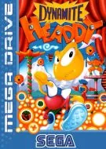

Mega Drive
Dynamite Headdy
- Año: 1994
- Desarrollador: Treasure
- Género: Plataformas / Acción
Headdy, el personaje principal, es la estrella de la producción Dynamite Headdy del Treasure Theatre. Headdy decide regresar a North Town para visitar a sus amigos Headcase, Hangman y Beau, para encontrarse con que el malvado rey marioneta, Dark Demon, la ha atacado para decidir qué marionetas debieran vivir y cuales debieran ser transformadas en sus malvadas tropas. Headdy es capturado por el Robo-Collector y rechazado por las fuerzas del rey, siendo echado en un cubo de la basura, de camino al incinerador. Sin embargo, Headdy escapa de las garras de Dark Demon y decide derrotar al malvado rey.
Pero los problemas acaban de comenzar. No solo el mundo está lleno por las tropas de Dark Demon, sino que para llegar a su malvado castillo debe derrotar a los Keymasters, que sirven al rey como guardia de élite. Para empeorar las cosas, Headdy es perseguido por su némesis cazarrecompensas, Trouble Bruin, una marioneta celosa del éxito de Headdy. Bruin quiere ser la estrella en su lugar, y no parará ante nada hasta lograrlo.
El juego tiene una serie de "escenarios" y de "actos". El final de cada acto se caracteriza por una pelea contra un Keymaster. La habilidad especial de Headdy es su cabeza, que puede ser lanzada en ocho direcciones: arriba, abajo, izquierda, derecha, y sus cuatro diagonales. Lanzándola contra los enemigos podremos dañarlos o matarlos.
Su cabeza también sirve para engancharse a "Hangman", un personaje que actúa como gancho. Agarrando a un Hangman con tu cabeza, puedes lanzarte en dicha dirección, como si te lanzaras con una goma elástica.
Headdy también puede cambiar su cabeza por otra diferente, si ataca a Headcase. Dependiendo del símbolo mostrado por Headcase, Headdy recibirá una cierta cabeza con distintas habilidades. Presionando el botón A, Headdy recupera su cabeza inicial y pierde dicha habilidad (no todas las cabezas permiten hacer esto). Hay 15 cabezas diferentes que pueden usarse en diversos niveles, y 3 que sólo aparecen en ciertos niveles. Casi todos los niveles incluyen una o más batallas contra algún jefe.
Esparcidos por los niveles hay una serie de Secret Bonus Points. Estos pueden obtenerse haciendo algo difícil o extraño, como encontrar un ítem escondido, derrotar a un jefe difícil de encontrar o romper un elemento del decorado.
Controles
Mando de Mega Drive: A B C abajo y, en los juegos de 6 botones, X Y Z arriba. Es el reparto general de la Mega Drive en esta máquina.
| Panel | Juego |
|---|---|
 | A |
 | B |
 | C |
 | X (solo juegos de 6 botones) |
 | Y (solo juegos de 6 botones) |
 | Z (solo juegos de 6 botones) |
 | Start |
 + +  | Salir del juego |
El panel en Mega Drive


Argumento
Recopilado de internet (2026-11-03). Lo marcado con ⚠️ no está probado en la bartop.
Headdy es una marioneta con la cabeza suelta, estrella de la obra Dynamite Headdy del teatro Treasure. Al volver a North Town para ver a sus amigos Headcase, Hangman y Beau, se encuentra con que el malvado rey Dark Demon la ha atacado y está convirtiendo a las marionetas en sus tropas. A Headdy lo atrapan y lo tiran a la basura camino del incinerador, pero escapa.
Para llegar al castillo del rey tiene que vencer a los Keymasters, su guardia de élite. Y le persigue Trouble Bruin, una marioneta celosa que quiere ser la estrella en su lugar.
Final: Headdy vence al rey. Tras los créditos hay un jefe secreto (se ve en el vídeo de «Vídeos»).
Fuentes
Wikipedia · descripción de la ficha (gamelist) · LongplayArchive
Jugabilidad
Recopilado de internet (2026-11-03). Lo marcado con ⚠️ no está probado en la bartop.
- Tipo de juego: plataformas de Treasure (1994), los de Gunstar Heroes. Para un jugador. Por escenas y actos, como una obra de teatro (ver «Guía de niveles»).
- La cabeza: Headdy salta y lanza la cabeza en cualquier dirección para atacar. También se agarra con ella a ganchos para subir y mueve objetos.
- Cabezas nuevas: hay 17 mejoras que cambian la cabeza: más daño (bolas de fuego girando), invencibilidad, curación, velocidad… Algunas duran poco.
- Salud: un foco en la esquina que cambia de color.
- Sin caídas mortales: si Headdy cae a un foso, rebota y vuelve, aunque recibe daño.
Fuentes
Guía de niveles
Recopilado de internet (2026-11-03). Lo marcado con ⚠️ no está probado en la bartop.
Según los capítulos del vídeo de «Vídeos» (las escenas principales):
| Acto | Escenas |
|---|---|
| 1 | The Getaway · Practice Area · Toys in the Hood · Mad Dog and Headdy |
| 2 | Down Under · Backstage Battle |
| 3 | Terminate Her Too · Mad Mechs 2 |
| 4 | Stair Wars · Spinderella |
| 5 | Flying Game · Fly Hard · Baby Face |
| 6 | Headdy Wonderland |
| 7 | The Rocket Tier · Fun Forgiven · Vice Versa · Twin Freaks |
| 8 | Fatal Contraption · Far Trek · Finale Analysis |
- Cada acto acaba con un Keymaster; Trouble Bruin aparece varias veces.
- ⚠️ La división en actos es aproximada (según el vídeo de Media Pool); los nombres son los del juego.
Fuentes
Objetos
Recopilado de internet (2026-11-03). Lo marcado con ⚠️ no está probado en la bartop.
| Objeto | Qué hace |
|---|---|
| Cabezas (17) | Cambian el ataque: más daño, invencibilidad, curación, velocidad… |
| Curación | Recupera salud |
| Puntos | Puntos extra |
| Vida extra | Una vida más |
| Liberty Head | Abre la fase de bonificación |
Fuentes
Trucos y secretos
Recopilado de internet (2026-11-03). Lo marcado con ⚠️ no está probado en la bartop.
Secretos
- Fase de bonificación: con la Liberty Head se entra en una fase en la que hay que encestar pelotas de baloncesto en las canastas correctas.
- Puntos secretos: cada fase tiene puntos de bonificación escondidos (el vídeo de Amy Rose Longplays los coge todos).
- Jefe secreto: después de los créditos.
⚠️ No he encontrado trucos de botones fiables de la versión occidental.
Fuentes
Longplay

Partida completa de la versión Mega Drive (1 h 44 min), de LongplayArchive: Longplay of Dynamite Headdy.
Pulsa el minuto de un nivel para ver el vídeo desde ese punto.
Escenas
| Acto | Momento |
|---|---|
| Acto 1 | |
| Acto 2 | |
| Acto 3 | |
| Acto 4 | |
| Acto 5 | |
| Acto 6 | Headdy Wonderland ▶ 57:24 |
| Acto 7 | |
| Acto 8 | |
| Final |